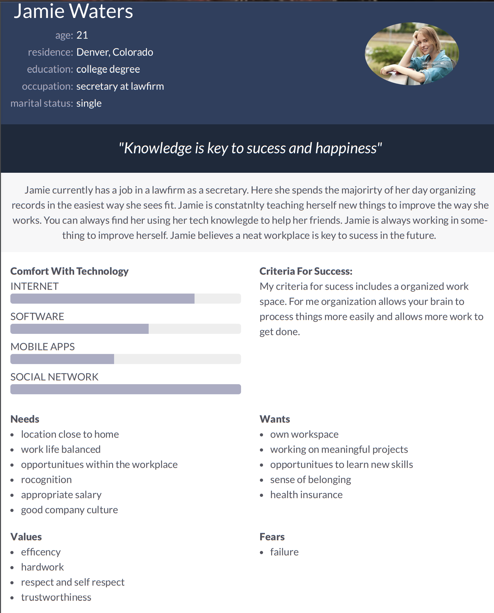
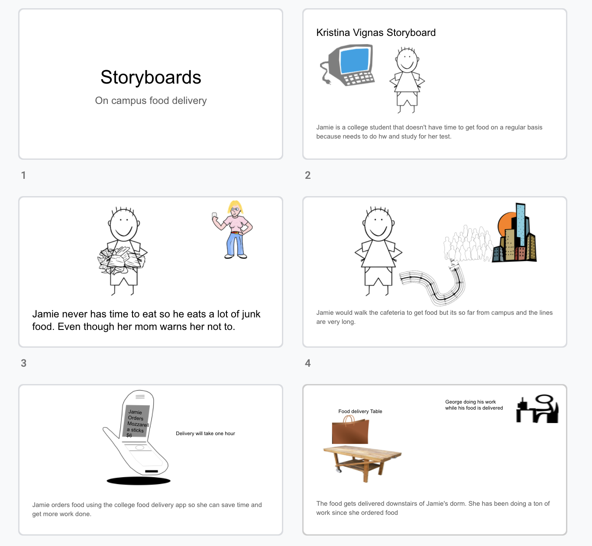
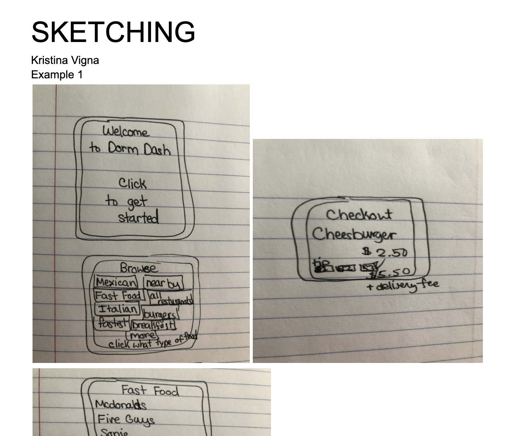
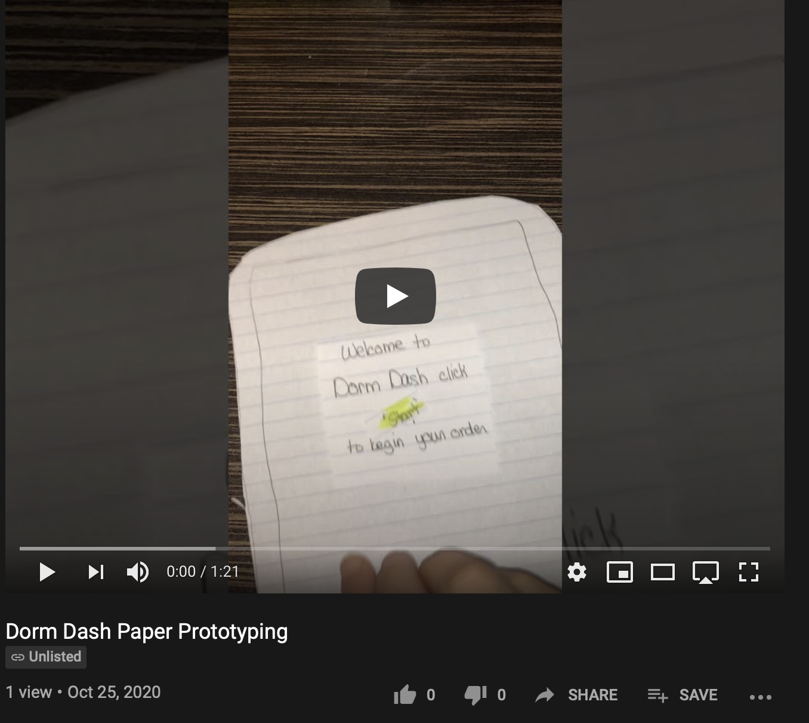
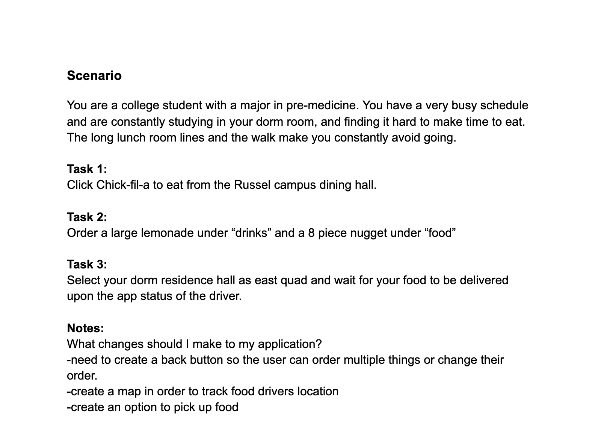

Problem Statement: Food Delivery on Campus

Many students on campus want their food delivered to their dorm room, and allowing delivery can make students lives so much easier and can help eliminate those long lunch lines.
Affinity Diagram: Food Delivery

My group and I worked together to create a brainstorm all things involving food delivery.
Personna: Jamie Waters
A personna of a typical food delivery app user.
Storyboard: Jamie Waters
A comic strip illustrating the need for an on campus delivery app.
Sketch: DormDash App
A sketch of potential app solutions for dorm delivery problems.
Paper Prototyping: DormDash App
A functional prototype on paper which we can use to ideate.
Usability Testing: Food Delivery
A scenario and tasks and the outcomes of usability tests.